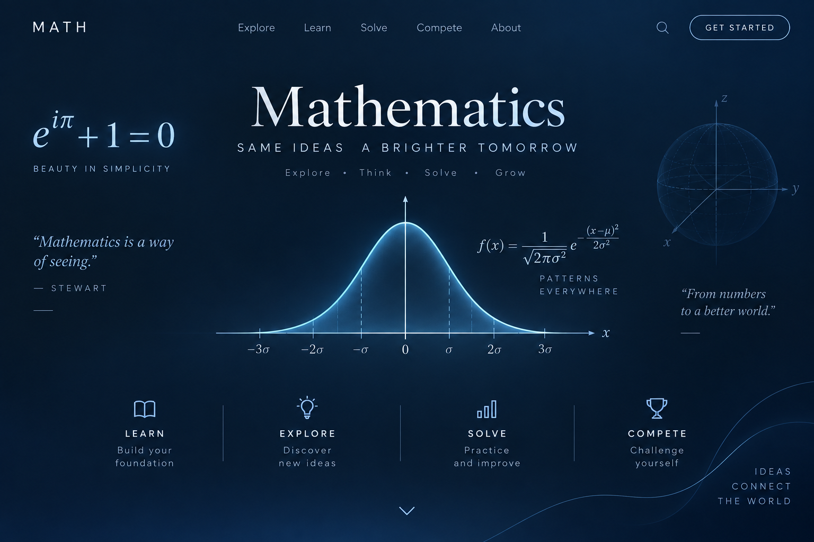

Hi, I'm Toby — Researcher, Explorer, and Teacher of Mathematics.
A research-focused exploration of mathematical patterns, invariants, structures, and complex problem-solving. This space documents my work in pure mathematics, applied research, and pedagogical experiments with math education.

Three cornerstones of this site — explained simply, organized for learning, and kept as a record of progress.
Plain-language guides to contests like the AMC and the Waterloo contests, with problem-solving strategies that travel well beyond the contest room.
AlgebraGeometryCombinatoricsTopic-by-topic overviews aligned with the BC math curriculum — from Foundations and Pre-Calculus 10 up to Pre-Calculus 12.
Grade 10Grade 11Grade 12Contest results, public lectures, and teaching — the work beyond writing about it.
ResultsTalksTeachingA record of my mathematical explorations, research projects, and reflections on problem-solving. This space exists to document the journey of discovery, not just the destinations.
ResearchReflectionsNew here? Three steps get you learning within the first minute.
Building contest intuition, or keeping up with the BC curriculum? Choose a path to explore.
2Jump straight to Math 10, 11, or 12 — or grab the printable formula sheet that matches your class.
3Check yourself with a short quiz and see where a first idea lives. Struggle counts as learning.